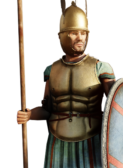
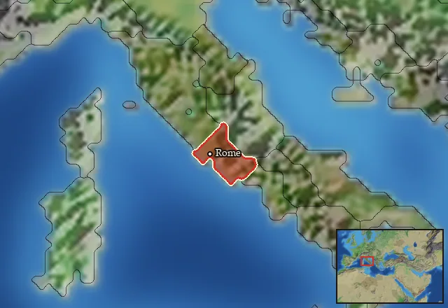

Latin Triarii


Class: spearmen · Category: infantry · Men per unit: 40
Reforms: No longer recruitable after A New Man: Gaius Marius (switched off), Polybian Reform · Becomes a newer unit with Polybian Reform
Description
"Their anxiety was increased by the fact that it was against the Latins that they had to fight, a people resembling them in language, manners, arms, and especially in their military organisation. They had been colleagues and comrades, as soldiers, centurions, and tribunes, often stationed together in the same posts and side by side in the same maniples." – Livy (History of Rome 8.9)
As the rearguard and last reserve of the Latins, these Triarii are highly respected and reliable warriors, recruited from the oldest and most experienced property-owning classes of the Latin cities and colonies. Armed with spears (hastae) and oblong shields (scuta), and equipped with heavy armour, they act as final infantry reserves. In battle, they kneel upon the right knee behind the principes with their shields braced against their left shoulders and their spears pointing upward. If both the hastati and principes are broken, the triarii stand up, open their ranks to receive the retreating troops through the intervals, close ranks, and advance as a wall of spears against the exhausted enemy. Launching a fresh charge, as if a second army is now attacking, they thus gave rise to the famous proverb for a desperate crisis in battle: "the matter has come to the triarii" (Liv. VIII.8.11: “inde rem ad triarios redisse”). While they fought the Romans years ago, these men now march as allies and brothers across marshes, mountains, rivers, and deserts, fighting together, suffering together, and winning victories together.
Historical background
The triarii formed the third and final battle line (acies) of the Roman and Latin manipular legion (Liv. 8.8.7–8; Varro, Ling. 5.89; Polyb. 6.21.9, 6.23.16). Unlike the hastati and principes, who were organized into maniples, from the 4th-century BC the triarii (according to Livy’s account) were organized into 15 banners (vexilla) of 60 veteran soldiers, accompanied by attachments of younger rorarii and attendants (accensi) to form 15 composite companies (ordines) of 186 men each (Liv. 8.8.7–8; Armstrong, 'Organized chaos’, in: Armstrong and Fronda (eds.), Romans at War (2020), pp. 84–86).
The triarii were also called “pilani”, making the formations of hastati and principes the “antepilani” (“in front of the pilani”: Liv. VIII.8.7-8). Their task was to kneel on their right legs, waiting for their turn in battle, the spears put into the earth as if they were forming a palisade (“haud secus quam vallo saepta inhorreret”: Liv. VIII.8.10). As Varro describes: ‘The pilani are called also triarii, 'third-line-men', because in the battle arrangement they were set in the rear, in the third line, as reserves […]. Plautus says: ‘Come now, everyone sit on the periphery, just like triarii’” (Frivolaria frg. 5 Ritschl. = Varro Ling. Lat. V.89). This jab demonstrates that, even though everyone relied upon the triarii to save the day in a crisis, in most battles, they did not have much to do, besides sitting around.
The triarii represent the oldest element of the Central Italic heavy infantry, retaining the heavy thrusting spear (hasta) from the archaic hoplite panoply while adopting the large oval scutum (Liv. 8.8.3, 8.8.10; Polyb. 6.23.16; Burns, The Cultural and Military Significance (2005), pp. 82–94; Torelli, 'Archaic Rome between Latium and Etruria', in: The Cambridge Ancient History VII.2 (2006), pp. 35–37). Generally using the same equipment as the Romans, their helmets, besides a few of the popular Montefortino type, are a bit old-fashioned and more individualistic. They are reminiscent of Etruscan, Latin, and Campanian finds of Italo-Phrygian and Italo-Chalcidian helmets (mirror from Praeneste, Royal Ontario Museum, Inv. 928.48.3; Tomba 1, Nola-Casamarciano; Amazonomachy sarcophagus of Ramtha Huzcnai of Tarquinia, Firenze, Museo Archeologico Nazionale 5811). The Triarii wore heavy body armour, including bronze muscle cuirasses and Etrusco-Latin style scale cuirasses, as well as greaves for protection.
Historically, the Latini were the inhabitants of Latium, bounded by the Tiber in the north, the Corniculan, Praenestine, and Lepine mountains in the east, the Garigliano and the southern Sacco and Liris valleys in the south, and the Tyrrhenian Sea in the west (Plin. HN 3.56; Poma, s.v. 'Latini, Latium', in: Brill's New Pauly [2006]). Following the expulsion of the Tarquinii, tensions between Rome and the Latin cities led to the Battle of Lake Regillus in 496 BC, which ended without a decisive Roman victory and prompted the founding of the foedus Cassianum (the Latin League) in 493 BC. This treaty established mutual rights and duties between the Romans and the Latin communities, as well as creating a common defensive league against the Volsci, Aequi, Sabines, and Veii. It also resulted in the foundation of joint Latin colonies during the 5th and 4th centuries BC, before the alliance broke down at the start of the Latin War in 340 BC (Dion. Hal. Ant. Rom. 6.95.1; Poma [2006]).
During the Latin War (340–338 BC), the Battle of Vesuvius was decided in favour of the Romans after both Latin and Roman commanders committed their triarii in its final phase (Liv. 8.8–10; Armstrong (2020), pp. 84–86). Following the Latin Settlement of 338 BC, in which Rome dissolved the League and isolated the remaining Latin states by “denying them the right to mutual commerce, marriages, and alliances” (Liv. 8.14.10), the Latin triarii continued to serve faithfully as the veteran reserve of the allied contingents levied under the formula togatorum (Tan, 'The dilectus-tributum system’, in: Armstrong and Fronda (eds.), Romans at War (2020), pp. 58–61; Helm, 'Poor man's war – rich man's fight', in: ibid. (2020), pp. 100–102, 105–106). Aside from twelve exhausted Latin colonies that refused to supply further troops and funds to Rome in 209 BC (Liv. 27.9.7; Tan (2020), p. 70), the socii nominis Latini remained highly loyal throughout the Punic Wars and refrained from joining the rebellion of Rome’s allies during the Social War, eventually obtaining full Roman citizenship under the Lex Iulia of 90 BC (Poma [2006]).
Stats
| Rank in roster | ||
|---|---|---|
| Men per unit | 40 | ███······· 30% |
| Attack | 15 | ███████··· 74% |
| Charge bonus | 18 | ███████··· 66% |
| Defence | 46 | █████████· 91% |
| · armour | 10 | █████····· 54% |
| · defence skill | 31 | ██████████ 95% |
| · shield | 5 | ██████···· 56% |
| Morale | 14 | ████████·· 79% |
| Discipline | Normal | |
| Training | Highly trained | |
| Recruitment cost | 1,780 dn | ████······ 35% |
| Upkeep per turn | 650 dn | █████····· 52% |
| Turns to recruit | 4 |
Weapons
| Primary | Secondary | Primary | Secondary | Primary | Secondary | Primary | Secondary | ||||
|---|---|---|---|---|---|---|---|---|---|---|---|
| Attack | 15 | — | Type | melee · blade | — | Damage | piercing | — | Properties | Light spear (braced against cavalry charges from the front) · +8 attack against cavalry | — |
| Charge bonus | 18 | — |
Defence
| Primary | Secondary | Primary | Secondary | Primary | Secondary | Primary | Secondary | ||||
|---|---|---|---|---|---|---|---|---|---|---|---|
| Total | 46 | — | Armour | 10 | — | Defence skill | 31 | — | Shield | 5 | — |
Condition and terrain
| Hit points | 1 | Ground: scrub / sand / forest / snow | -1 / -1 / -4 / -1 | Charge distance | 30 | Formations | Square |
Technical stats
| Time between blows (primary / secondary) | 2.5 s / — | Collision mass per man (1.0 is normal) | 1.27 | Spacing between men: close / loose | 1 × 1.2 m / 2 × 2.4 m | Default ranks | 5 |
| Extra fatigue in hot climates | 3 |
In battle: Can sap · Good stamina
Who can recruit it
No faction has this on its core roster: it can be raised only in the provinces below.
Any faction holding one of the provinces below can field it.
Exactly what a settlement must have, route by route (1)
| For | Building | Also requires | |||||||||
|---|---|---|---|---|---|---|---|---|---|---|---|
| Every faction | Any settlement | Tier 2 Military Industrial Complex · Latin area of recruitment · Dependency only · Tier 1 Colony not built · not Polybian Reform |
Areas of recruitment

| Zone | Provinces | ||||||
|---|---|---|---|---|---|---|---|
| Latin | 1 |